Beauty Concept Gallery
健康為本，與美共生。
在 GAIAN，光影、材質、器物與作品共同構成一處可欣賞、可交流，也可尋找生活靈感的空間。
當美，成為一種文明。
Art & Life
藝術存在於展出的作品，也藏在家具的線條、瓷器的觸感與珠寶的細節裡。
透過欣賞、使用與交流，邀請您走進創作者的世界，感受作品背後的巧思，在細節中找到共鳴。
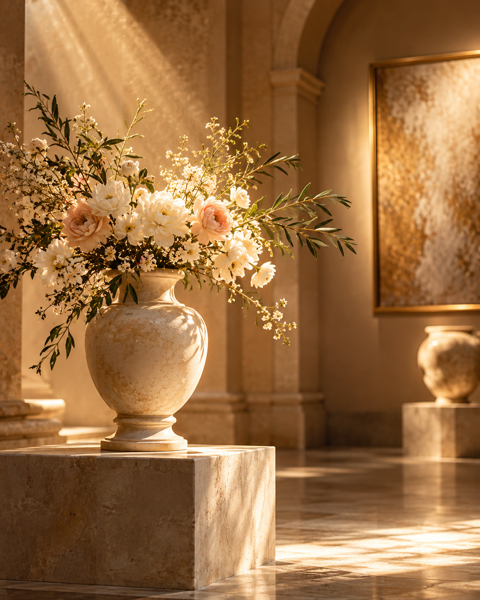
The Idea of Beauty
我們欣賞外表的細緻，也重視身體、心境與文化涵養所展現的氣韻。
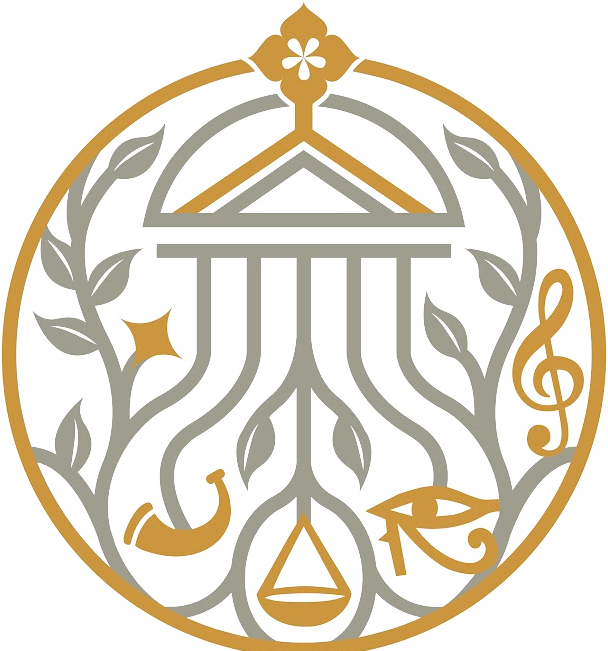
重視身體所需，留意日常狀態。
在回應他人的期待之餘，也聽聽自己真正的需要。
在忙碌與休息之間，安排適合自己的步調。
讓身處的空間，兼具舒適與品味。
從藝術、工藝與故事中，拓展眼界與感受。
以自己的眼光與品味，展現獨有的生活風格。
Every Object Has A Story
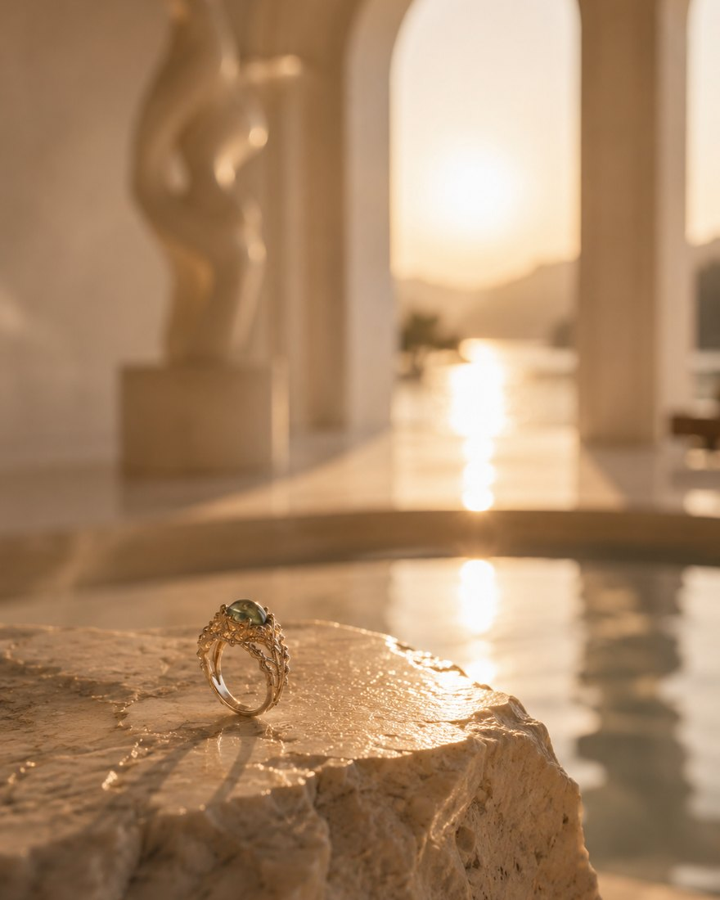
將創作靈感化為可穿戴的藝術，承載個人記憶。
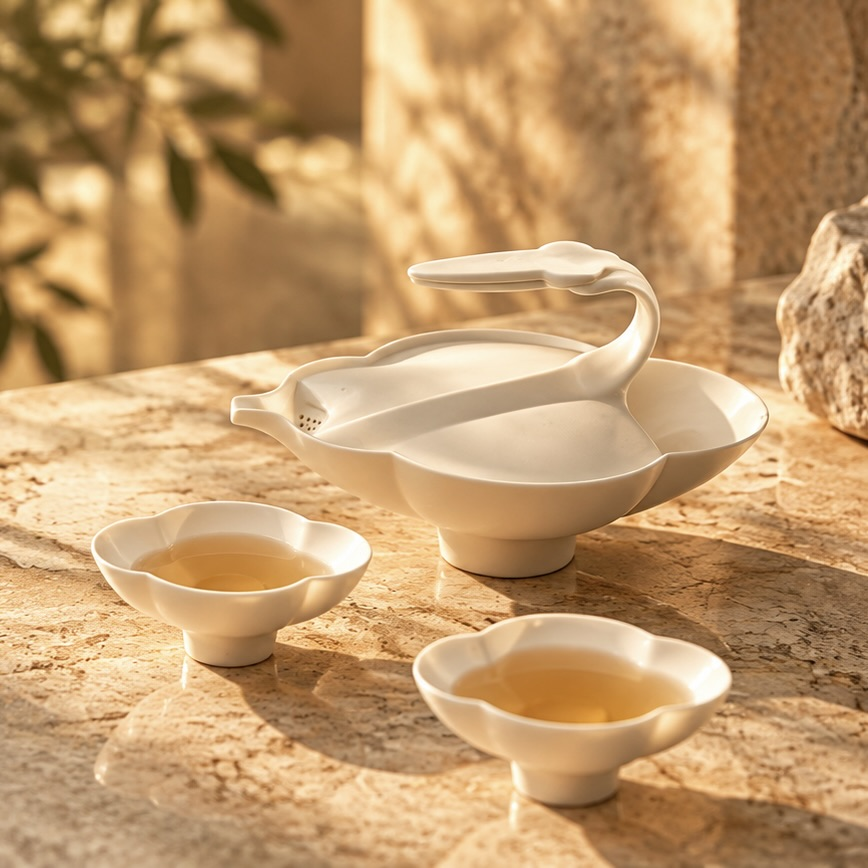
器形、釉色與觸感，呈現工藝的細膩層次。
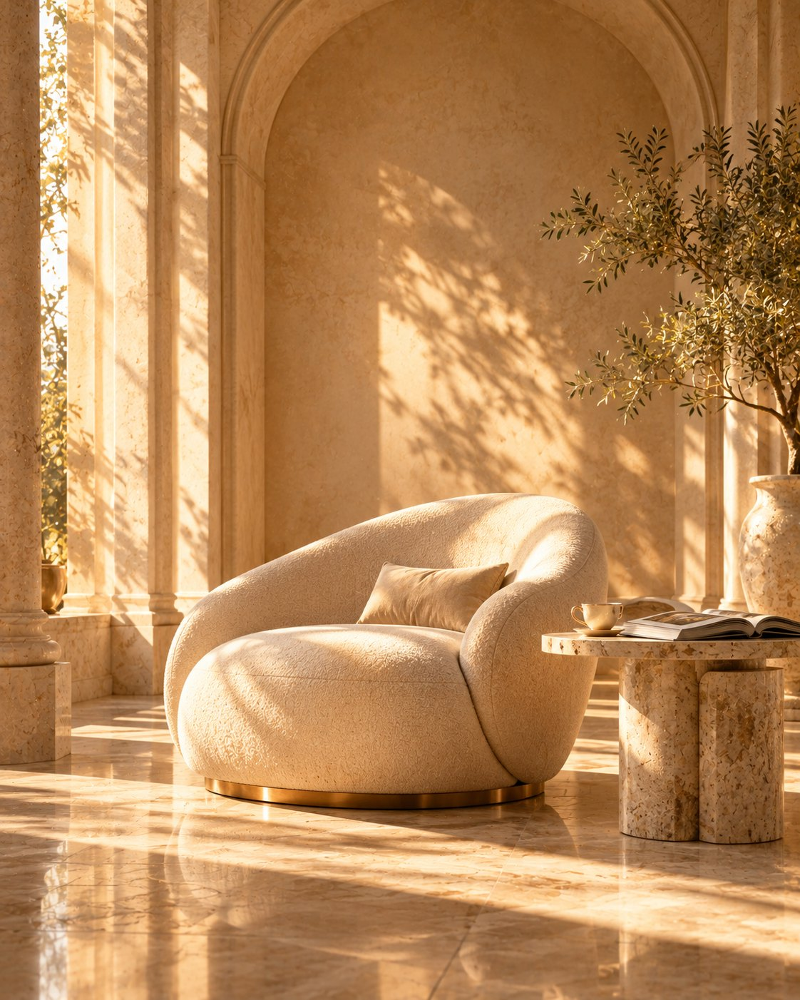
以富有藝術感的造型，兼顧設計美感與使用的舒適度。
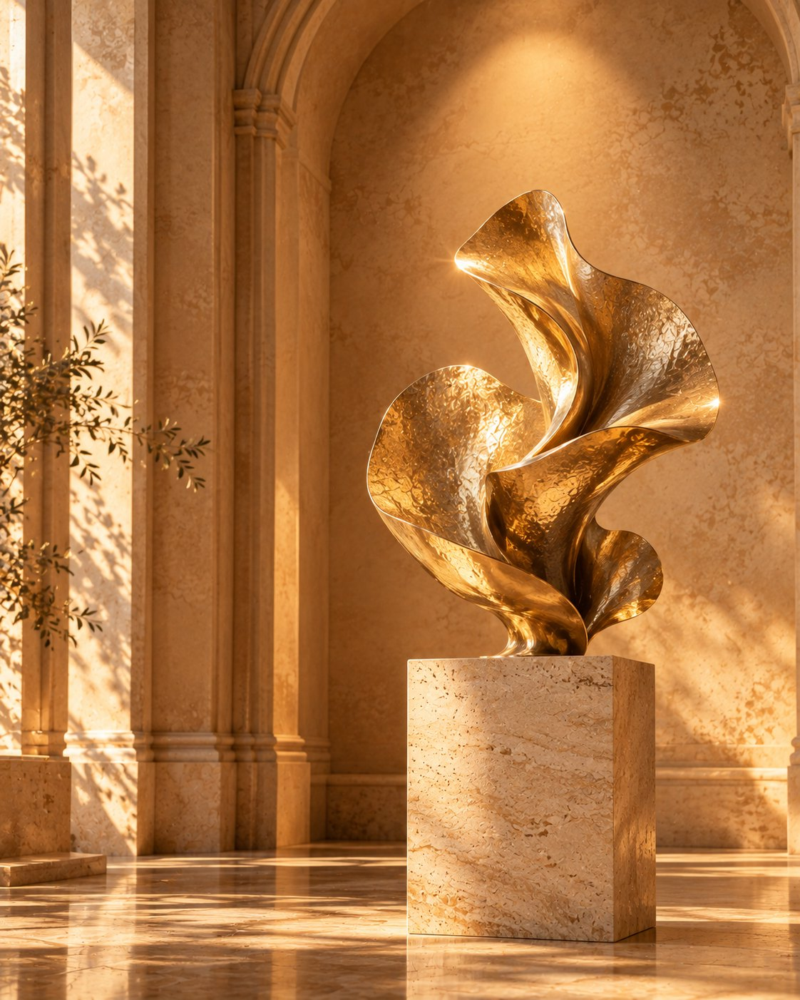
透過創作者的視角，感受文化的底蘊與傳承。
Beauty, Inside & Out
回應身體所需，也珍藏日常所愛。
讓健康融入習慣，
讓美，體現在生活的細節中。
Curated Living
我們重視設計、材質、工藝與使用感受，
選擇值得長久欣賞，
也能融入日常的作品與用品。
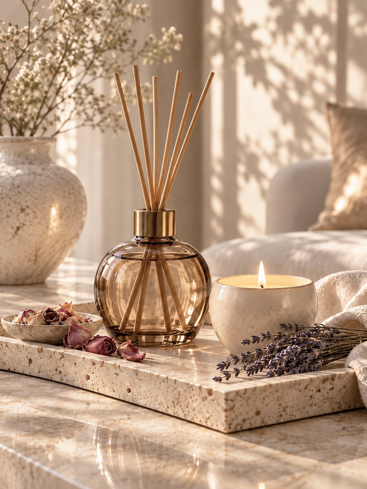
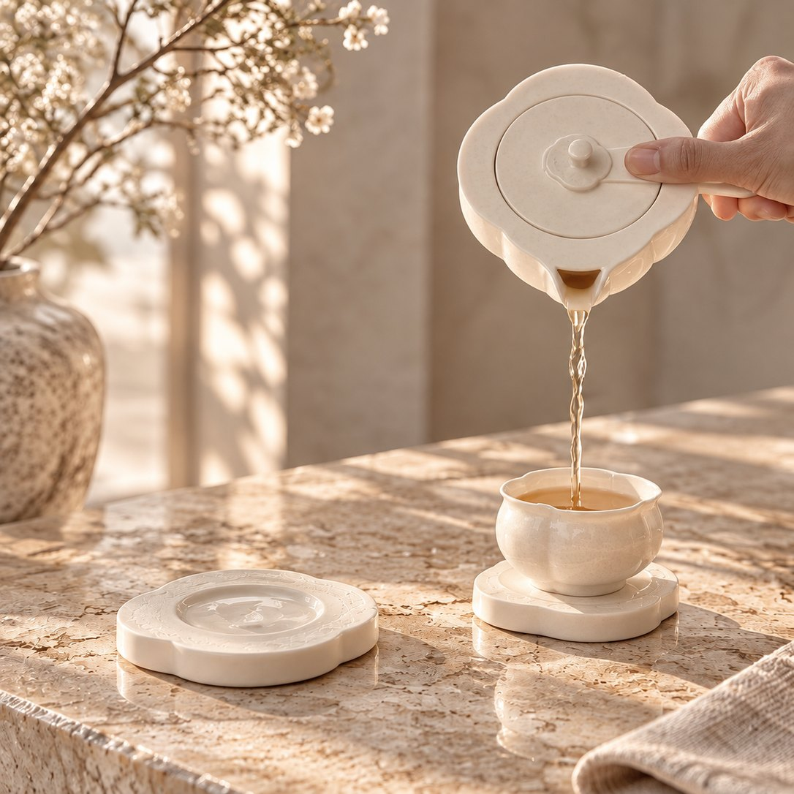
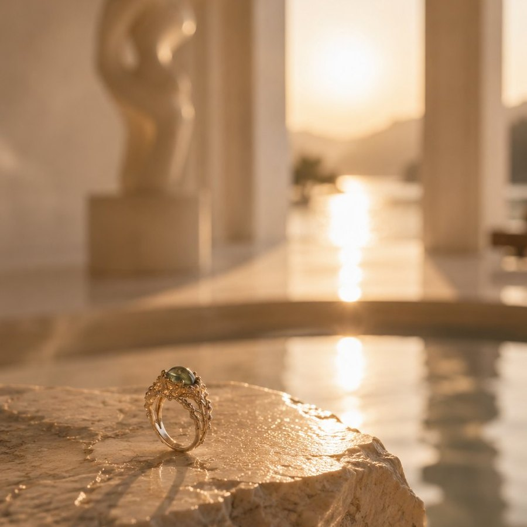
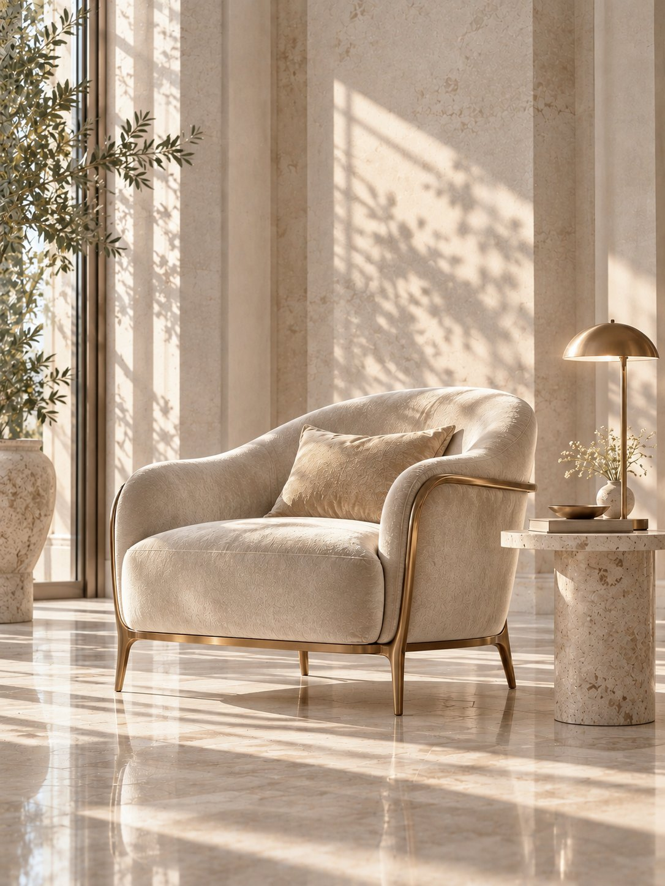
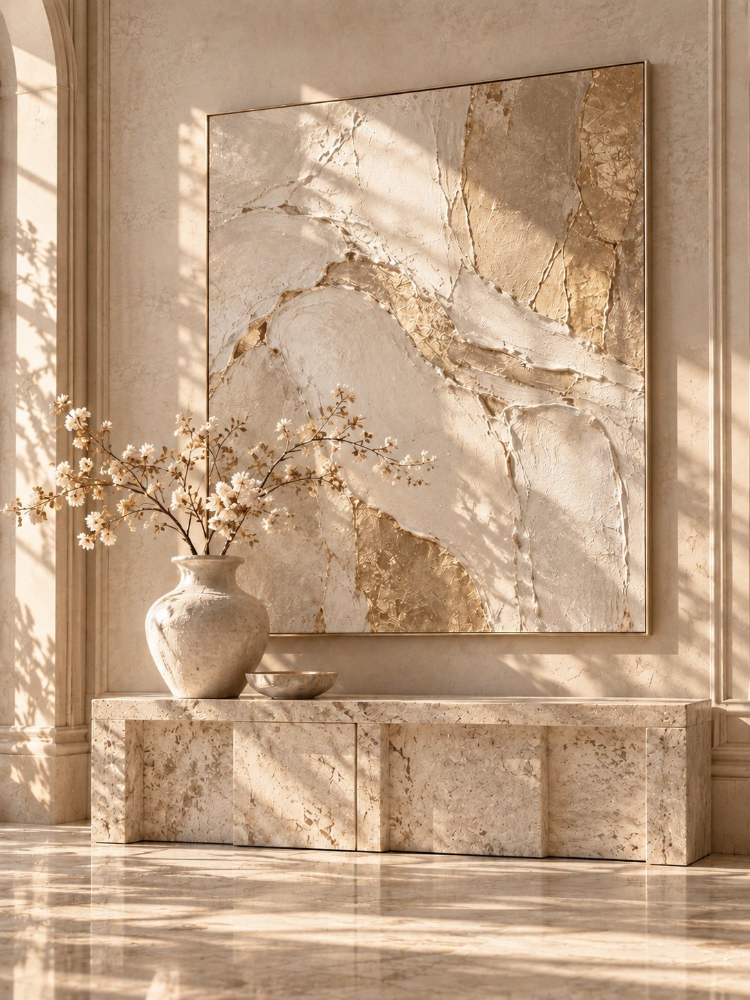
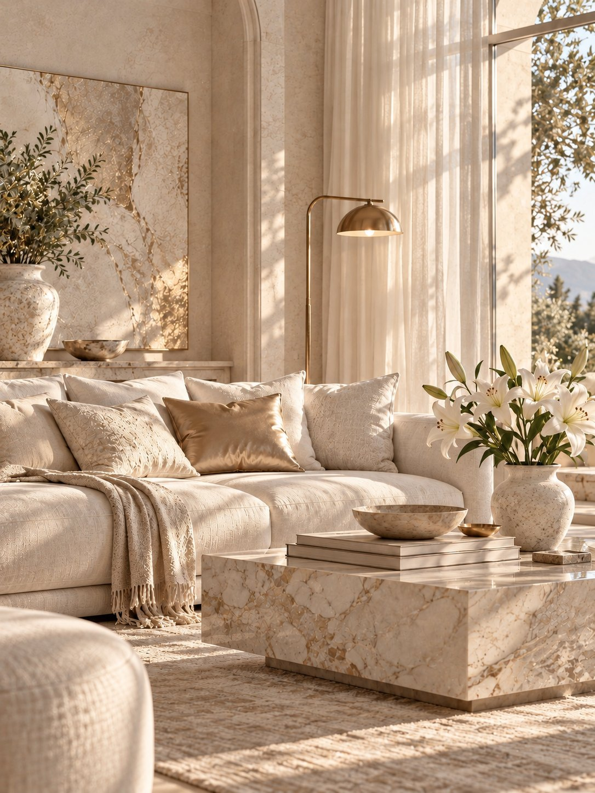
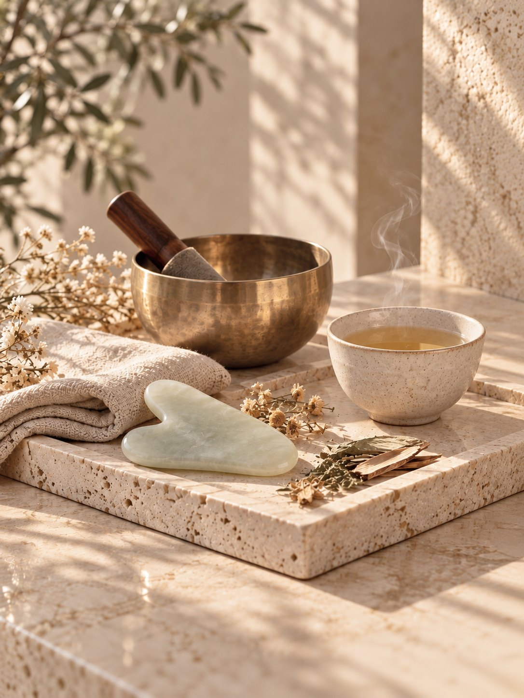
Beauty Is A Way Of Living
一件喜愛的作品、一只順手的茶杯、
一處願意停留的角落，
都能承載您對生活的選擇。
GAIAN 美的概念館，
邀請您把來訪時的發現，帶進自己的日常。
讓對人生的重視，
成為日常的品味。